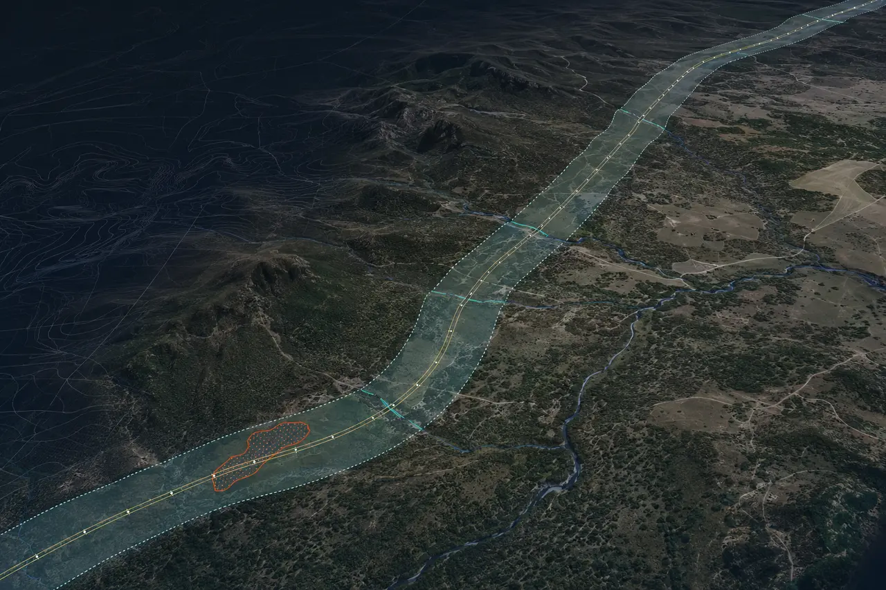

SOUTH TEXAS • ENERGY • OIL & GAS
Geospatial support for faster field and acquisition decisions.
Wise Geospatial organizes land, well, infrastructure, terrain and current-condition information into practical maps, models and production files for lean exploration and operating teams.
Acquisition MappingLiDAR / Point CloudsUAS DocumentationGIS / CAD Production

DEMONSTRATIONROW + CORRIDOR INTELLIGENCEIMAGERY • TERRAIN • ACCESS • GIS
SAN ANTONIO BASEDREMOTE PRODUCTION AVAILABLEFAA PART 107DEFINED WORK PACKAGES
WHERE WISE FITS
Technical capacity without permanent overhead.
Wise works behind land, geology, engineering and operations teams. Your specialists make the title, subsurface and operating decisions; we assemble and produce the spatial information they need to act.
01Acquisition Support
Bring scattered tract, well, pipeline, access, imagery and terrain data into one organized geographic view for internal review.
- Lease and tract exhibits from supplied data
- Nearby well and infrastructure context
- Access, terrain and constraint mapping
02Field & Operations Mapping
Document what exists on the ground and convert current imagery or field information into repeatable operating records.
- Pads, roads, facilities and asset inventories
- Drainage, erosion and surface-change review
- Construction and reclamation documentation
03Production Overflow
Send a defined LiDAR, GIS, CAD, imagery or point-cloud work package when internal staff is committed elsewhere.
- LAS/LAZ cleanup and derivative products
- GIS attribution, conversion and map production
- CAD, terrain and QA/QC support
DEFINED STARTING PACKAGE
South Texas Acquisition & Operations Map Pack
A fast, project-specific spatial package designed for an operator reviewing acreage, planning field work or organizing a newly acquired asset.
Discuss a pilot area →
01Executive Area MapA clean overview of the area of interest, supplied tract or lease data, wells, roads and relevant infrastructure.
02Well & Infrastructure ContextPublic and client-supplied well, pipeline, facility and access information organized into a consistent map.
03Terrain & Access ReviewElevation, contours, slope, drainage and preliminary access context derived from available terrain data.
04Current Surface ConditionsAvailable imagery—or optional UAS capture—showing pads, roads, crossings, structures and visible surface conditions.
05Decision-Ready FilesPDF exhibits, KMZ, GIS layers and CAD-ready exports organized for the project team’s existing workflow.
06Data-Gap & Discrepancy NotesA short record of missing inputs, apparent coordinate conflicts and items requiring land, legal, engineering or field confirmation.
COMMON ASSIGNMENTS
From office backlog to field-ready information.
Acquisition ReviewConsolidate the location data behind a prospect or producing-property review.
TRACTS • WELLS • INFRASTRUCTURE
Pad & Access Planning SupportBuild terrain, slope, drainage and preliminary route exhibits for internal planning.
DTM • CONTOURS • ACCESS
Pipeline / ROW DocumentationOrganize corridor imagery, crossings, access points, terrain and GIS features.
CORRIDORS • CROSSINGS • CHANGE
Facility & Asset InventoryCreate a consistent geographic inventory of visible pads, tanks, roads and facilities.
ASSETS • GIS • FIELD DATA
Repeat Condition MappingCompare imagery across time for construction, erosion, access, reclamation or storm documentation.
PROGRESS • EROSION • RECORDS
Data Conversion & QAClean coordinate lists, legacy maps, CAD, GIS, imagery and point-cloud files for downstream use.
CONVERSION • QA/QC • DELIVERY
CLEAR SERVICE BOUNDARIES
Useful support without pretending to replace your specialists.
Wise Geospatial provides technical mapping, imagery, spatial-data processing and production support. We do not provide geological prospect opinions, reserve estimates, mineral-title opinions, engineering design or legal boundary determinations.
Professional surveying and other regulated services are performed only within the licensed structure required by the project and jurisdiction. Preliminary and compiled mapping must be confirmed by the appropriate land, legal, geological, engineering or licensed-survey professional before being used for regulated or dispositive decisions.
START WITH ONE AREA
Send the acreage, asset or backlog.
Share the area of interest, data already available and decision your team needs to make. We will identify a practical first deliverable and the inputs required.